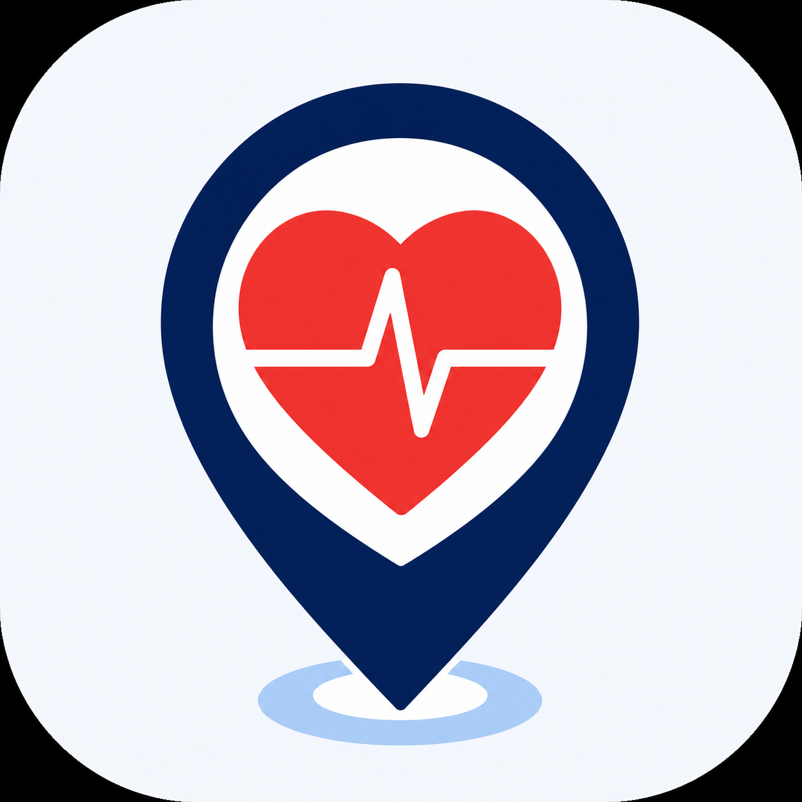
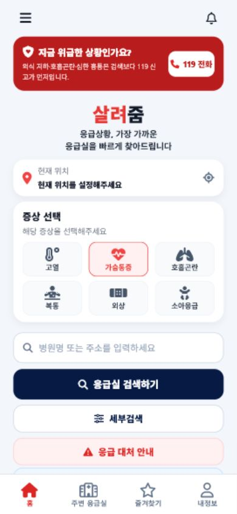
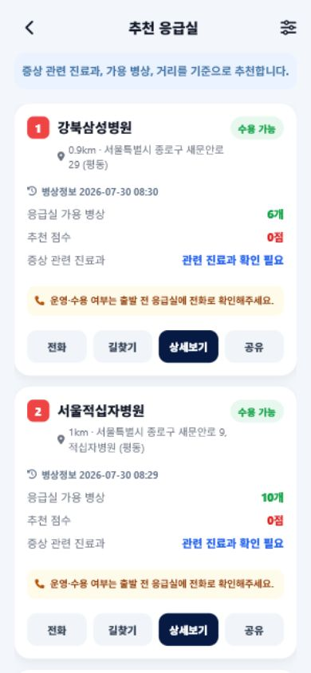

PROJECT INTRODUCTION · 2026
LastCall
가까운 응급실과 응급 행동을 한곳에 연결하는 모바일 서비스

현재 위치와 검색 조건을 바탕으로 주변 응급실을 빠르게 찾고, 지도·전화·위치 공유·의료정보·커뮤니티까지 응급 상황에 필요한 흐름을 하나의 앱으로 연결한 프로젝트입니다.
01 · 프로젝트
검색보다 먼저
응급 행동을 안내
응급 상황에서 병원 정보를 찾는 단계를 줄이고, 사용자가 다음 행동으로 바로 이어지게 합니다.
위급 증상 안내와 119 전화가 홈 최상단에 있고, 위치 기반 조회가 어려울 때는 지역 직접 검색으로 전환할 수 있습니다. 제공 정보는 의료진이나 119의 판단을 대신하지 않는다는 안전 고지도 함께 제공합니다.
02 · 핵심 흐름
발견에서
연결까지
01ASSESS
위급 증상 확인
119 우선 안내
02SEARCH
현재 위치·지역
증상·병상 필터
03COMPARE
거리·병상·진료
지도와 목록 비교
04CONNECT
병원 전화·지도
위치·의료정보 공유
- 국립중앙의료원 공공데이터를 서버에서 조회하고 앱 검색 조건과 일치하도록 가공합니다.
- 병상 수는 실제 수용을 보장하지 않으므로 ‘병상 있음’으로 표현하고 전화 확인을 유도합니다.
- 사용자가 동의한 경우에만 위치를 사용하며, 거부해도 지역 직접 검색이 가능합니다.
03 · 주요 기능
응급 정보와
일상적 안전 관리
응급실 탐색
주변·전국 검색, 증상·진료과·병상·시설·중증 조건, 거리순 정렬, 병원 상세와 즐겨찾기
즉시 행동
119·병원·보호자 전화, 현재 위치 공유, 의료정보 공유, 응급처치 안내와 오프라인 정보
커뮤니티 운영
게시글·댓글·좋아요·신고, 운영정책 동의, 콘텐츠 숨김, 관리자 신고 처리와 세션 인증

HOME · 119와 위치 기반 탐색
SEARCH · 조건별 응급실 결과